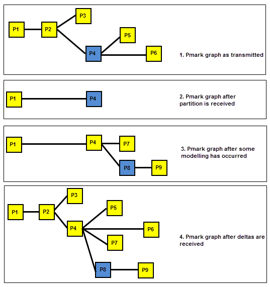

| |
Archives |
| <<< Bulletin Board | Chapters | Debug Functionality >>> |
Archiving is the process of saving the data in Parasolid’s internal memory to external storage. Your application can archive one or more parts, or the contents of a partition, into a single logical file or block of data.
Parasolid archives are intended to fit into whatever archiving system is used by your application. This could take the form of a controlled directory structure on the host computer, or some kind of database. The nature of this storage depends on your application’s frustrum.
Parasolid does not provide any means of deleting parts from archive, or listing keys which have been used to archive parts, either in the current session or in previous sessions. Your application must keep track of the keys used. Your application’s frustrum should also trap attempts to write new archive data to a place which already exists (i.e. re-use of keys).
See Chapter 2, “File Handling”, of the Parasolid Downward Interfaces manual for further information about the frustrum functions required to implement archiving.
See Chapter 22, “Assemblies And Instances”, for further information on the use of assemblies in archiving.
For an example of this functionality, see the code example in the
C++\Code Examples\Application
Support\Archiving\Transmit
folder, located in
example_applications
in your Parasolid installation folder.
To save or write data from Parasolid to an external store is referred to as transmitting information.
To load or read data from an external source into the current Parasolid session is referred to as receiving information.
PK_PART_transmit and PK_PART_transmit_u transmit one or more parts to a logical block of data through the frustrum. You supply these functions with a key string which the frustrum can use, for example, as a filename or an index into a database.
|
Note: If you want to use PK_PART_transmit_u to transmit data regardless of whether or not the key string contains Unicode characters, you must handle this in your UCOPWR frustrum function. |
In addition, you can use PK_PART_transmit_b to transmit one or more parts to application memory.
For all three of transmit functions:
There are five formats that can be used for the archive, which should be provided in your application’s frustrum as required.
|
These use the FFOPWR frustrum function, or the UCOPWR frustrum function if it is defined. |
|
|
This format uses the application frustrum functions which are registered by PK_SESSION_register_applio_2. |
|
|
This format uses the application frustrum functions which are registered by PK_SESSION_register_indexio. Parts transmitted in this format may be subsequently received on a “per-face” basis. See Section 101.2.3, “Transmitting indexed files”, for more information. |
For further information about transmit formats see Chapter 2, “File Handling”, of the Parasolid Downward Interfaces manual.
A part may be transmitted so that it can be received by a version of Parasolid earlier than the current version (the version doing the transmitting).
This means that parts modeled in the current version of Parasolid can also be archived in any format from V7 onward, and thereafter received by an application using that earlier version of Parasolid.
You use the
transmit_version
option in PK_PART_transmit_o_t to specify the version you want to use.
Parasolid provides two methods for supporting backwards compatibility in XT data:
|
Note: If saving a part in a format earlier than Parasolid V12.1, the part must not contain certain non-printing characters, such as carriage return and line feed, in attribute string fields. Attempting to save a part containing such characters raises the error PK_ERROR_bad_text_conversion in the call to PK_PART_transmit. Parts saved in Parasolid V12.1 format or later can contain these non-printing characters, and no error is raised. |
When you transmit one or more parts, you can opt to transmit the files using a format that allows specific faces to be received by subsequent Parasolid sessions, rather than an entire part. This is particularly useful if you are transmitting large parts with the expectation that users will only need access to certain information from those parts during future editing sessions.
In order to transmit files with the required indexing information, you need to do a number of things:
transmit_format
to PK_transmit_format_indexio_c.
transmit_indexed_context
option to supply a pointer to indexing data stored by your application. The context is a way for your application to communicate with the functions defined in the indexed frustrum.Once you have transmitted a part as an indexed file, you can still receive the whole part into a Parasolid session as normal; the only difference is that an indexed part file is slightly larger than a non-indexed part file, and a number of received nodes will be deleted immediately after receiving the part.
Section 101.3.3, “Receiving specific faces from a part”, describes how you can receive a specific face from a part that has been transmitted with indexing information.
You can transmit mesh data to separate files or embed the data within the part file using the
transmit_meshes
option. The
transmit_meshes
option has the following values:
|
Transmit meshes to a separate file, which is controlled by the file handling functions in your frustrum. |
|
When the
transmit_meshes
option is set to PK_transmit_meshes_embedded_c:
receive_using_seek
option in PK_PART_receive. See Section 101.3.5, “Receiving mesh data” for more information.
transmit_format
option must be one of the binary formats and the frustrum seek function FFSKXT must be registered using PK_SESSION_register_fru_2.
Note: The
transmit_meshes
option is ignored in PK_PART_transmit_b as the meshes are always embedded within the application memory block. |
When a part is archived, the following items are saved:
And optionally, in a separate place:
Identifiers are integer values which are attached to all entities within a part, except for fins and the part itself. The identifiers within a part are distinct. Unlike tags, they are saved when a part is archived, so identifiers can be stored with a part key in an external database to keep a handle on a particular entity.
See Section 2.4.4, “Identifiers”, for more general information about identifiers.
There is no guarantee that the same entities have the same tags when loaded into another session. The decision as to whether your application should use identifiers depends upon whether it needs to reference specific entities within archived parts in different modeling sessions.
If you do need to use identifiers, then it is important that you record the identifiers for all entities that you may wish to access in a new session, prior to transmitting the part. You do this by calling PK_ENTITY_ask_identifier for each entity that you are interested in.
When receiving the part in a new session, you need to find the tags of those entities whose identifiers you previously recorded. Do this by calling PK_PART_find_entity_by_ident for all of your recorded identifiers.
Naturally, you need to save the list of saved identifiers between sessions, independently of the part itself.
The following table summarizes the differences between identifiers and tags with respect to archiving and Parasolid sessions:
* caution must be applied as a change of tag could appear to occur when an entity is replaced by a similar entity
PK_PART_receive and PK_PART_receive_u receive one or more parts from a logical file or data block through the frustrum, using the key string given by the application.
It is your application’s responsibility to ensure that Parasolid can find the archive data for the part. This is mostly dependent on the frustrum. If the key cannot be found by the frustrum (for instance because it simply treats keys as filenames and has no information on which directory to look in) then PK_PART_receive and PK_PART_receive_u fail.
|
Note: If you want to use PK_PART_receive_u to receive data regardless of whether or not the key strings contain Unicode characters, you must handle this in your UCOPRD frustrum function. |
In addition, you can use PK_PART_receive_b to receive one or more parts from application memory, provided these parts have been transmitted in the same, or an earlier, version of Parasolid. You can use PK_PART_receive_version, PK_PART_receive_version_b, or PK_PART_receive_version_u to obtain the version of Parasolid used to create part transmit data.
For all three receive functions:
Parts are transmitted with a reference to a specific Parasolid schema file. Once you have updated the version of Parasolid used by your application, its frustrum must retain schema files for each version used, or else your application is unable to receive old parts. You can find out what the current schema version is using PK_SESSION_ask_schema_version.
To receive user fields archived with the entities of a part, the length of the archived user fields must be the same as, or shorter than, that set for the current session by PK_SESSION_start.
If they are not, you can prevent PK_PART_receive and PK_PART_receive_u from trying to read them by setting the
receive_user_fields
option to false. This makes Parasolid do the following:
For further information see the “User fields” section in Chapter 116, “Session Support”.
If a part has user-defined attributes attached, the attributes and their definitions are transmitted with the part. When the part is then received into a session, the kernel automatically loads the attribute definition of the attributes, if there is no definition with the same name already in the session.
If the attribute definition already exists in the new session, and matches the definition saved with the part, the part can be retrieved.
If the attribute definition already exists in the new session, but does not match the definition saved with the part, you can use the
attdef_mismatch
option to control the behaviour. This option takes the following values:
|
Note: System defined attributes attached to a part are always received successfully. |
If a part has been previously transmitted with indexing information (as described in Section 101.2.3, “Transmitting indexed files”), then you can opt to receive specific face from the part, rather than the whole part. This can be particularly useful if the part file is very large, and you are only interested in working with some of the information it contains.
To do this, you need to specify the following options when receiving the part. These are all available in the PK_PART_receive_o_t options structure:
transmit_format |
When receiving specific faces, this should be set to PK_transmit_indexio_c. The received XT file must have been transmitted using this option as well. |
part_index |
For use only when receiving an XT file that contains several part files, this is an index that specifies which of the available parts the required faces should be drawn from. |
n_identifiers identifiers |
The number of identifiers, together with a list of the identifiers, of the faces that you want to receive into the session. Currently, only a single face can be received in a single call: |
receive_indexed_context |
A pointer to indexing data stored by your application. The context is a way for your application to communicate with the functions defined in the indexed frustrum. |
In addition, you can optionally use
key_is_partition
to receive a specific face from a part stored in partition data. If this option is PK_LOGICAL_true, then the specified key is assumed to contain partition data (created as described in Section 101.4, “Transmitting a partition”). In this case, the ordering of the bodies used to define
part_index
is the same as that returned by PK_PARTITION_ask_bodies.
|
Note: You can only receive a specific face from a part if you have registered an indexed frustrum using PK_SESSION_register_indexio |
You can receive compound bodies into a session by using any of the standard receive functions: PK_PART_receive, PK_PART_receive_u, or PK_PART_receive_b. See Section 15.13.1.4, “Receiving compound bodies into a session”.
How mesh data is received into a session depends on whether it is embedded in the XT file or is in a separate XMM file, and can be controlled using the
receive_using_seek
option. This takes the following values:
When the
transmit_meshes
option is set to PK_transmit_meshes_embedded_c:
When the
transmit_meshes
option is set to PK_transmit_meshes_separate_c the mesh data is in a separate XMM file therefore the
receive_using_seek
option has no effect and mesh data will be loaded into the session when it is needed.
Note: The
receive_using_seek
option is ignored in PK_PART_receive_b as mesh data is always received and loaded into the session immediately. |
If you wish to optimise the
receive_using_seek
option, you need to register the frustrum seek function FFSKXT using PK_SESSION_register_fru_2. See Section 5.3, “Registered frustrum” in the Downward Interfaces manual for more information.
The
receive_mixed
option allows you to control whether to receive parts containing a mixture of classic and facet geometry in your application. On receiving data into a Parasolid session, you can choose to set
receive_mixed
to one of the following values:
|
An error of PK_ERROR_mixed_geometry is returned on encountering a part with mixed geometry. Default |
|
|
Allow parts containing mixed geometry to be received into your application. Note: If the part being received does not contain mixed geometry, then this value will have no effect. To receive mixed parts, facet geometry must be enabled. See Chapter 83, “Overview Of Convergent Modeling” for more information on enabling support for mixed geometry. |
PK_PARTITION_transmit and PK_PARTITION_transmit_u transmit a partition as a logical block of data through the frustrum. PK_PARTITION_transmit_b transmits a partition to application memory. As for part data:
transmit_version
so that the partition can be received by previous versions of Parasolid. In order to transmit partitions, the value of
transmit_version
must be at least 120. See Section 101.2.2, “Transmit version - save as earlier version”, for details.
transmit_indexed_context
, so that specific faces from the partition data can be received by another Parasolid session. See Section 101.2.3, “Transmitting indexed files”, for details. To receive such data, see Section 101.3.3, “Receiving specific faces from a part”.|
Note: Light partitions may not be transmitted. |
By default, PK_PARTITION_transmit transmits the current state of a given partition. If required, you can transmit the history of the partition as well, in terms of its pmarks and delta information. You use the
transmit_deltas
and
pmarks
options to do this:
transmit_deltas
provides basic control for transmitting the partition history.
pmarks
provides additional control, allowing you to transmit specific segments of the partition history, while omitting others.
The
transmit_deltas
option takes the following values:
|
Do not transmit any delta information; only the current state of the partition is transmitted. This is the default. |
|
|
Transmit delta information for just those pmarks in the “main line”, that is, from the initial pmark to the current pmark. In Figure 101-1, if P1 is the initial pmark, and P6 the current pmark, then the main line consists of P1, P2, P4, and P6. |
|
|
Transmit deltas at a later time, rather than in the current function call. If you use this value, you can transmit the partition’s deltas via a later call to PK_PARTITION_transmit_delta. |
Figure 101-1 Transmitting pmarks in the main line
If you use
transmit_deltas
, then:
The
pmarks
option lets you override the deltas to transmit, by providing a specific set of pmarks. The way these pmarks are interpreted depends on the setting of
transmit_deltas
:
|
|
|
|
|
|
|
|
|
|
the function call fails with PK_ERROR_bad_option_data. Do not use |
When transmitting specific pmarks using this option, pmarks are transmitted on the fly without affecting the current session, and the deltas are merged and relinked in the transmitted data.
|
Note: You should always transmit the initial and current pmarks. In addition, you must transmit a junction pmark if pmarks from more than one of its branches are transmitted. |
In Figure 101-2, if you do not want to transmit P5, then the junction pmark P4 is not required. However, if you want to transmit P5 , then junction pmark P4 is required. In both cases, P1 and P6 also need to be transmitted, because they are the initial and current pmarks.
Figure 101-2 Transmitting junction pmarks
When a partition is archived, the following items are saved:
and optionally, in a separate place:
If the
transmit_all_attdefs
option is left at the default value of PK_LOGICAL_true, then all attribute definitions available in the Parasolid session are transmitted. If you set
transmit_all_attdefs
to PK_LOGICAL_false then only those attribute definitions that are actually used in the partition are transmitted. In order to minimise the size of partition files, you are advised to set
transmit_all_attdefs
to PK_LOGICAL_false.
Note: Transmitting deltas is not guaranteed to work when using the
transmit_version
option of PK_PARTITION_transmit or PK_PARTITION_transmit_u to transmit a file using a previous Parasolid version. |
You can transmit mesh data into a separate file or embed it within the partition file using the
transmit_meshes
option as described in Section 101.2.4, “Transmitting mesh data”.
PK_PARTITION_receive and PK_PARTITION_receive_u receive a partition from a logical file through the frustrum. PK_PARTITION_receive_b receives a partition from application memory.
build_number
is 0, the partition was originally transmitted using the
transmit_version
option. The version number returned represents the format used for the transmit file, rather than the version of Parasolid used to create it. See Section 101.4.
build_number
is non-zero, the version number returned represents the actual version of Parasolid used to create the transmit file.You can specify a number of options when receiving partitions, including the following:
receive_deltas |
Specify whether to load the partition’s pmarks and deltas. This takes the following values:
|
receive_all_attdefs |
Choose whether to receive all attribute definitions stored with the partition, or only those defining attributes in the partition and its deltas. This option mirrors the PK_PARTITION_transmit option
This option only has an effect when |
attdef_callback attdef_callback_on attdef_context |
Use these options to resolve any mismatches between existing attribute definitions and definitions in the received partition, where a received definition has the same name as an existing definition, but other parts of their standard form differ. See the documentation for PK_PARTITION_receive_o_t for more information. |
allow_missing_deltas |
If If you use this option and need to tell whether a delta file was present or not, you should do one of the following:
|
receive_using_seek |
How mesh data in the partition is handled if it is not immediately needed. See Section 101.3.5, “Receiving mesh data” for more information. |
receive_compound |
You can receive compound bodies into a session by using any of the standard partition receive functions: PK_PARTITION_receive, PK_PARTITION_receive_u, and PK_PARTITION_receive_b. See Section 15.13.1.4, “Receiving compound bodies into a session”. |
receive_mixed |
Choose whether to receive parts containing a mixture of classic and facet geometry in your application. See Section 101.3.6, “Receiving parts with mixed geometry” for more information. |
receive_locked |
Choose whether to lock the received partitions to the calling thread. See Section 101.5.2, “Locking a received partition” for more information. |
PK_PARTITION_receive_deltas_2 receives the pmark graph and deltas for a given partition from a logical file through the frustrum:
receive_prev_version_deltas
was given to PK_PARTITION_receive or PK_PARTITION_receive_u, in which case deltas transmitted from earlier compatible releases of Parasolid may be receivable. Note that transmission of deltas from previous versions is not always guaranteed. See Section 101.4.2, “Contents of a partition archive”, for details.Deltas can only be received for a partition if that partition was received earlier in the session, with option PK_PARTITION_rcv_deltas_later_c, and the pmark which the partition was at immediately after being received, has not been deleted. However, the partition may be modified, and pmarks created, between receiving the partition and receiving its deltas. This is illustrated in Figure 101-3 (current pmarks are shown in blue).
Figure 101-3 Pmark graph as transmitted
If you use session marks (see Section 98.4, “Session rollback”, for more information) and session roll forward is switched off, you can use the
new_at_mark
option in PK_PARTITION_receive_deltas_o_t to manage correct deletion of pmarks received via deltas when rolling the session back to a previous mark.
By default, when you receive pmarks into a partition via deltas, the “age” of those pmarks is denoted by the point at which the delta was received into the partition, even though the partition itself was received earlier. Pmarks received via deltas in this way are deleted when rolling the session back to a point before the delta was received, even if the partition itself had already been received at that point.
In order to avoid this, set
new_at_mark
to PK_PMARK_new_with_partition_c. This ensures that pmarks received via deltas are not deleted when rolling the session back to a point before the delta was received: any pmarks received via deltas are only deleted if the session is rolled far enough back that their owning partition no longer exists.
Figure 101-4 shows a simple example of this in use (current pmarks are shown in blue).
Figure 101-4 Controlling deletion of pmarks when rolling the session back
Note: If your application does not use session marks, you can ignore the
new_at_mark
option. |
Parasolid’s meshes are optimised not to load their mesh data until it is needed for an operation (i.e. the meshes are lazily loaded).
However, if the partition received (via PK_PARTITION_receive) contains mesh data and the
receive_deltas
option is set to either PK_PARTITION_rcv_deltas_yes_c or PK_PARTITION_rcv_deltas_later_c, Parasolid will load all of the meshes in that partition immediately. Any subsequent calls to the PK_PARTITION_receive_meshes function have no effect. If you are using PK_PARTITION_receive and you want to load meshes lazily, the
receive_deltas
option must be set to PK_PARTITION_rcv_deltas_no_c.
Furthermore, if a pmark is created in a partition, Parasolid will load all meshes into the session that have not previously been loaded. Therefore you need to ensure your frustrum is capable of handling multiple calls to the relevant frustrum functions when loading a partition (or part) that contains mesh data. See Section 5.3, “Registered frustrum” in the Downward Interfaces manual for more information.
You can choose to lock a received partition to a calling thread using the
receive_locked
option which takes the following values.
Using this option allows you to switch the locally exclusive behaviour of application threads in a single call to PK_PARTITION_receive. For more information on locking partitions and function exclusivity, See Chapter 114, “Calling Parasolid From Multiple Threads”.
| <<< Bulletin Board | Chapters | Debug Functionality >>> |